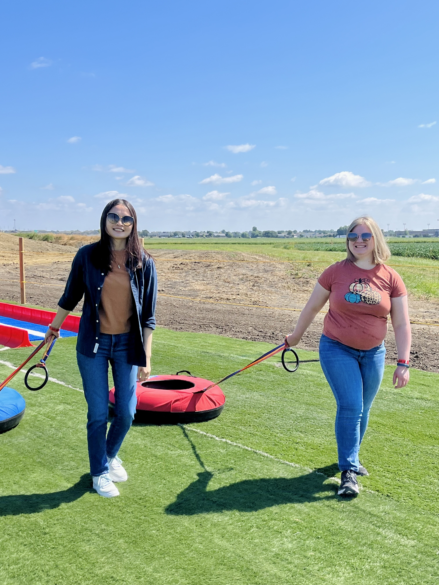
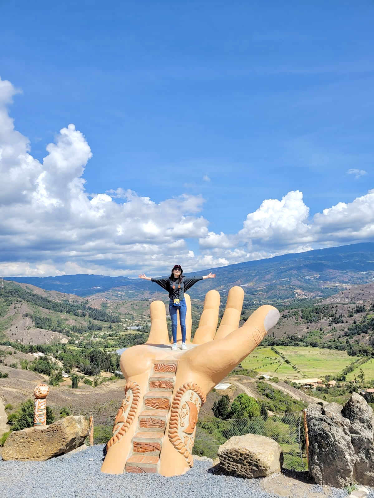

I enjoy taking my dog Mochi on walks. He's a 7-year old, Pembroke
Welsh Corgi, and I love him more than anything!
I have been happily married for 5+ years. I met my husband in
college 10 years ago, and we have been inseparable ever since.

Being an adult means being more intentional and finding time to
spend with our loved ones. This makes each moment more special.

What do I when I'm not walkig my dog and spending time with my
friends and family? TRAVELING! There's no better learning
experience.